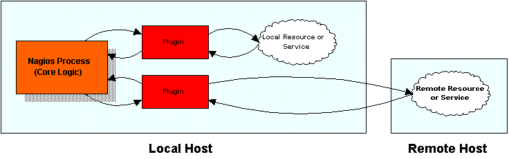

Introduction
Unlike many other monitoring tools, Nagios does not include any internal mechanisms for checking the status of services, hosts, etc. Instead, Nagios relies on external programs (called plugins) to do the all the dirty work. Nagios will execute a plugin whenever there is a need to check a service or host that is being monitored. The plugin does something (notice the very general term) to perform the check and then simply returns the results to Nagios. Nagios will process the results that it receives from the plugin and take any necessary actions (running event handlers, sending out notifications, etc).
The image below show how plugins are separated fromt the core program logic in Nagios. Nagios executes the plugins which then check local or remote resources or services of some type. When the plugins have finished checking the resource or service, they simply pass the results of the check back to Nagios for processing. A more complex diagram on how plugins work can be found in the documentation on passive service checks.

The Upside
The good thing about the plugin architecture is that you can monitor just about anything you can think of. If you can automate the process of checking something, you can monitor it with Nagios. There are already a lot of plugins that have been created in order to monitor basic resources such as processor load, disk usage, ping rates, etc. If you want to monitor something else, take a look at the documentation on writing plugins and roll your own. Its simple!
The Downside
The only real downside to the plugin architecture is the fact that Nagios has absolutely no idea what it is that you're monitoring. You could be monitoring network traffic statistics, data error rates, room temperate, CPU voltage, fan speed, processor load, disk space, or the ability of your super-fantastic toaster to properly brown your bread in the morning... As such, Nagios cannot produce graphs of changes to the exact values of resources you're monitoring over time. It can only track changes in the state of those resources. Only the plugins themselves know exactly what they're monitoring and how to perform checks. However, plugins can return optional performance data along with status information. This performance data can then be passed on to external applications which could produce graphs of service-specific information (i.e. disk space usage, processor load, etc.). More information on performance data can be found here.
Using Plugins For Service Checks
The correlation between plugins and service checks should be fairly obvious. When Nagios needs to check the status of a particular service that you have defined, it will execute the plugin you specified in the <check_command> argument of the service definition. The plugin will check the status of the service or resource you specify and return the results to Nagios.
Using Plugins For Host Checks
Using plugins to check the status of hosts may be a bit more difficult to understand. In each host definition you use the <host_check_command> argument to specify a plugin that should be executed to check the status of the host. Host checks are not performed on a regular basis - they are executed only as needed, usually when there are problems with one or more services that are associated with the host.
Host checks can use the same plugins as service checks. The only real difference between the two types of checks is in the interpretation of the plugin results. If a plugin that is used for a host check results in a non-OK status, Nagios will believe that the host is down.
In most situations, you'll want to use a plugin which checks to see if the host can be pinged, as this is the most common method of telling whether or not a host is up. However, if you were monitoring some kind of super-fantastic toaster, you might want to use a plugin that would check to see if the heating elements turned on when the handle was pushed down. That would give a decent indication as to whether or not the toaster was "alive".